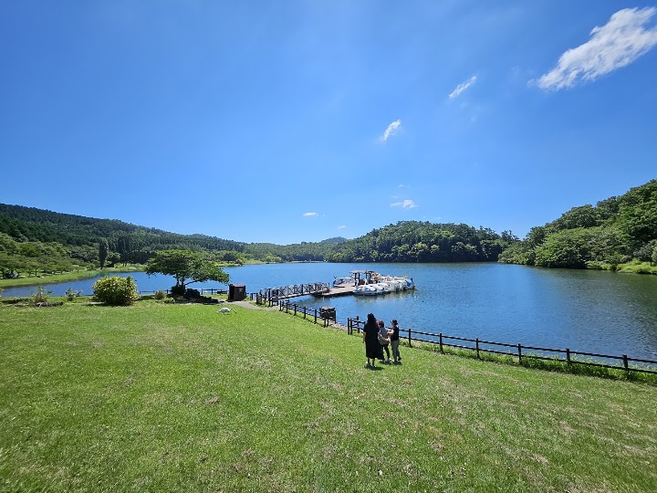
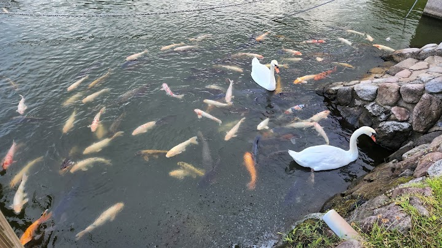
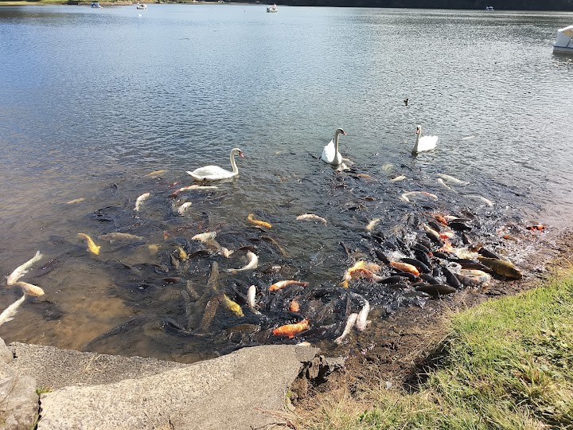
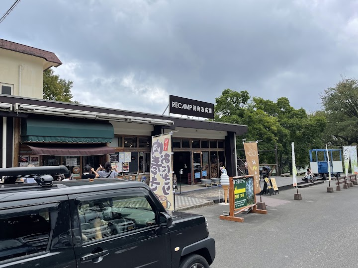
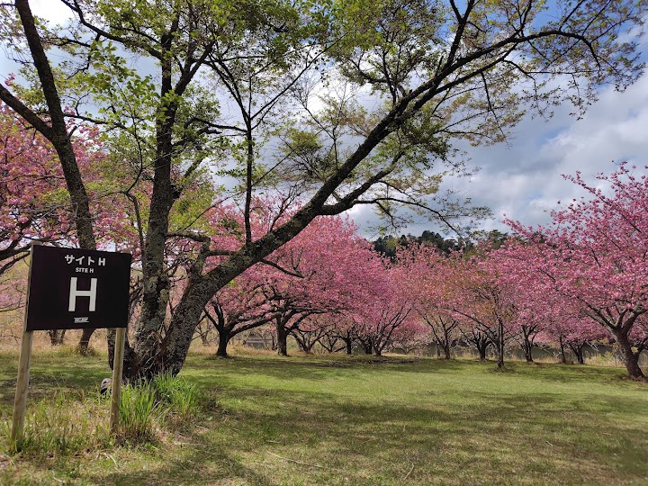

Shidaka Lake
Popular lake featuring campgrounds, hiking trails, boat rentals & fishing in a tranquil setting.
Open in Google Maps (street view, more photos and reviews there)






Visitor tips on finding it and getting there
A nice little lake, up in the mountains, to enjoy the scenery. Or go for a walk/run around. The sign even says how long it will take. There's a little fish food box where you pay by honor system. Also a large campground which was used even in mid-November.
Peaceful place. Not crowded with tourists. Locals go here for a little walk, sitting under the tree, enjoying surroundings with a cup of tea and biscuits. From the bus stop at the T-junction near a little farm shop, you need to walk around 800m to the lake.
The lake is beautiful, and it has a large amount of coy fish and swans. They have a feeding area for the animals, if you pay 100yen you can get food for them. They also have paddle boats and good restrooms with western toilets available. The parking is a little confusing, we ended up having to park by the forest adventure place. I would've loved a walking path around the lake. They just have grass and benches. The grass was a nice change though. Overall I really enjoyed our visit.